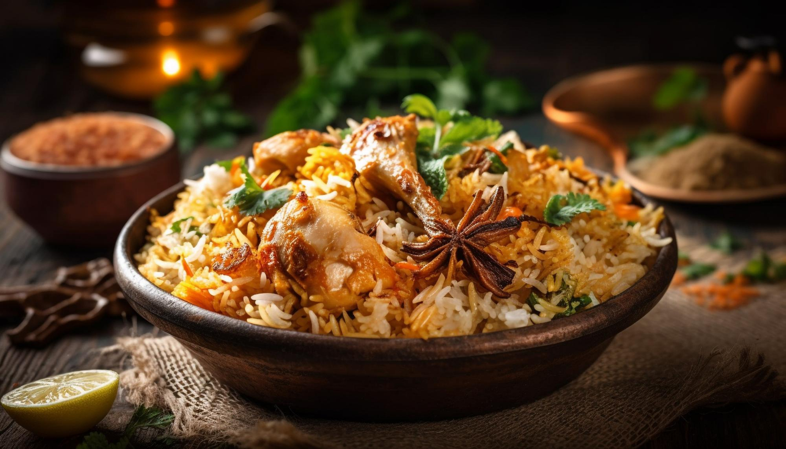

Biryani

Hyderabadi Chicken Biryani
This Biryani is the most famous biryani in India and there are more than
100 flavors of it.
biryani comes in all budgets just as it comes in all flavors. so it
becomes a very picky food item to anyone
So it is a mandatory item in almost all the marriage functions that happen
in hyderabad or in Telangana in general
Ingredients
- Chicken Meat 1kg
- Chilli powder 250gms
- Oil as required
- Turmeric and Ginger paste
- Curd 1/2 cup
- Basmathi Rice 2kgs
- Coriander leaves
Preparation Steps
- Take the chicken into a bowl and wash it well
- Apply curd and turmeric powder the chicken
- Take basmathi rice and start cooking it in a pressure cooker
- Add chilli powder to the chicken and apply it well on the chicken
-
Now put the chicken pieces and oil into the pressure cooker and wait
till you realise you didn't do Chicken Biryani